Field gallery
Photographs from school visits, health outreach and community support activities. Select a photograph to see the full image.

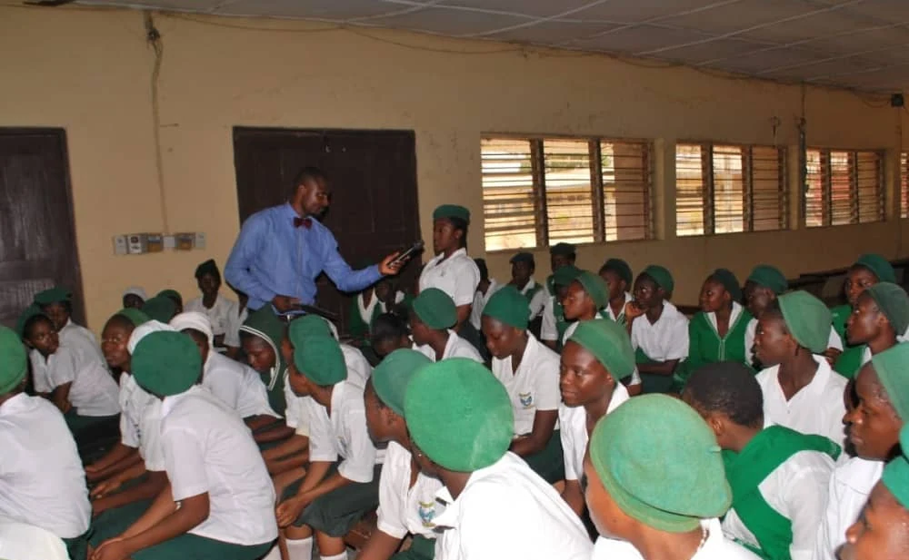
A student takes the microphone

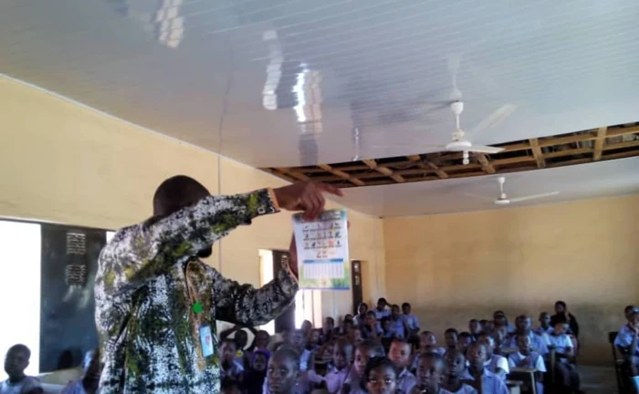
Speaking with students

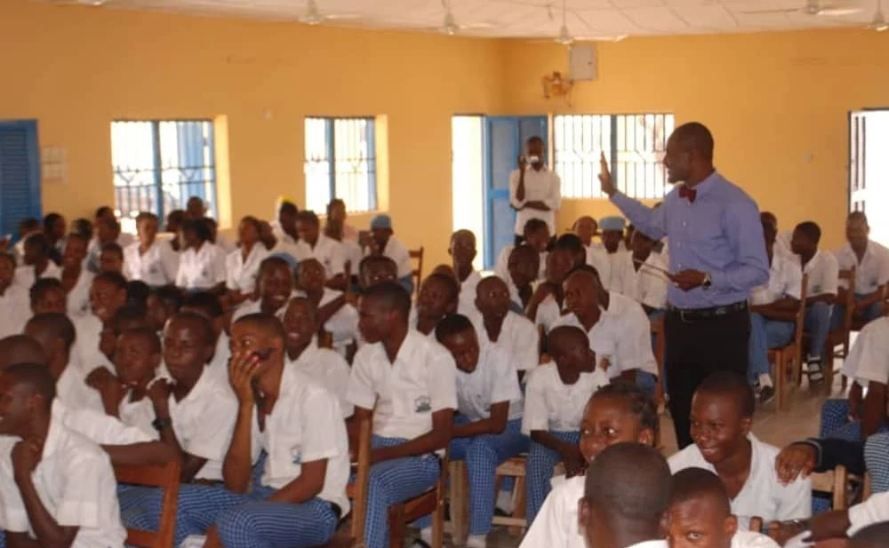
A classroom conversation

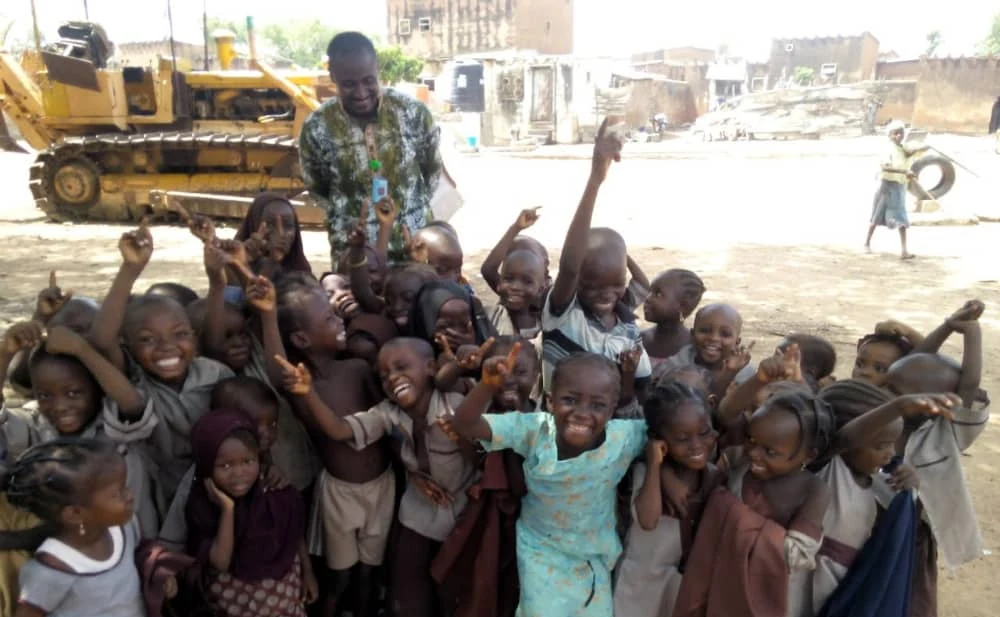
Education outreach in Borgu

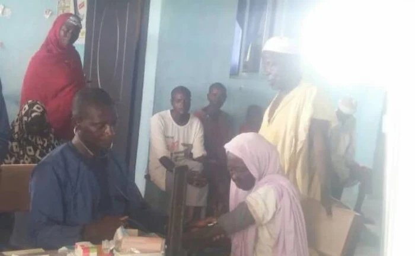
A community health consultation

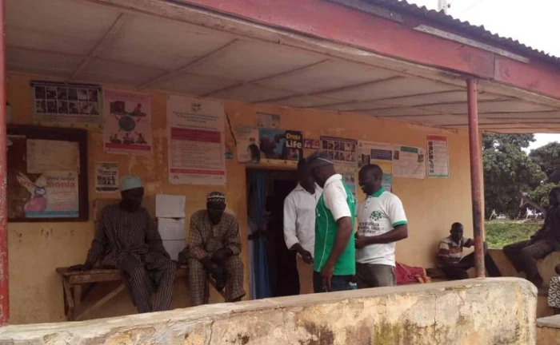
At the outreach centre

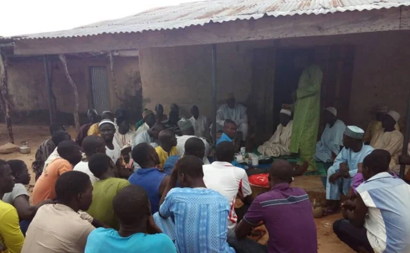
A health talk with residents

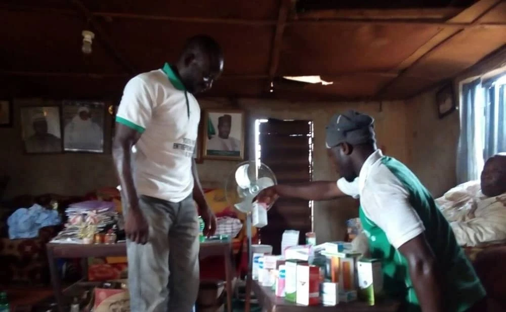
Preparing medical supplies

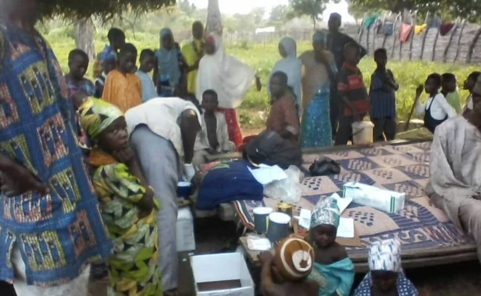
An outdoor outreach session

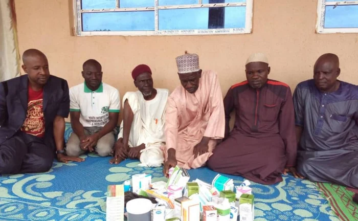
The community health team

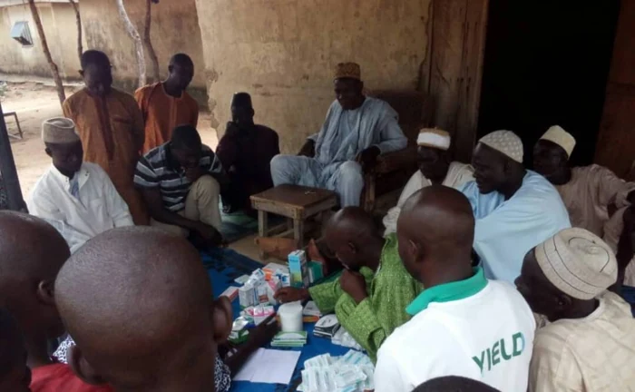
A discussion with local residents

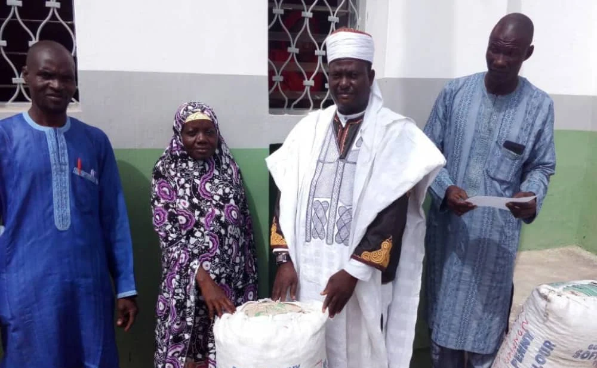
Community food support

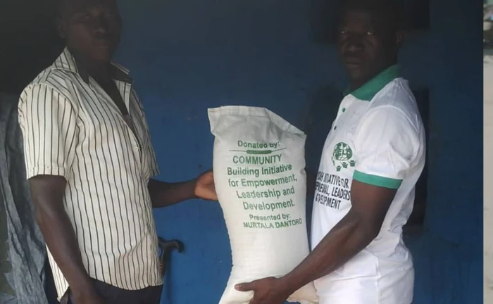
A food parcel handover

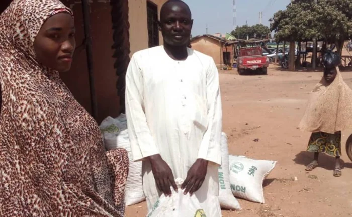
Food for households

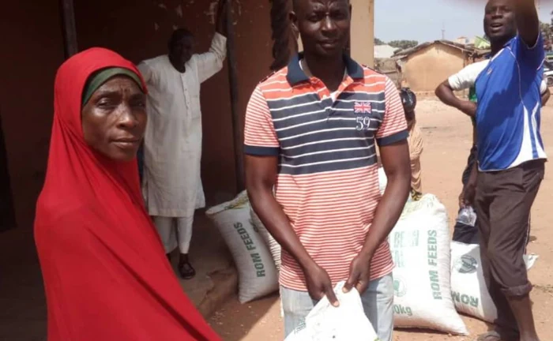
Distributing food supplies

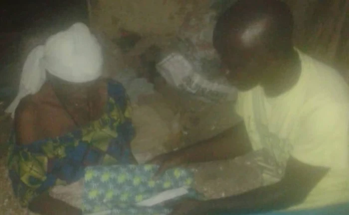
Clothing support

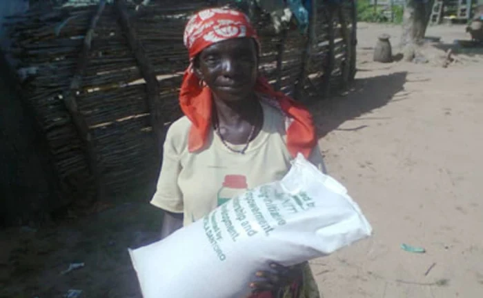
A food parcel for a family

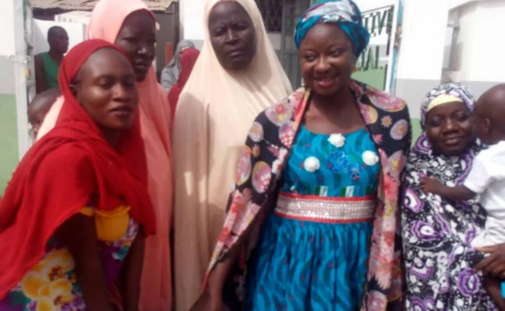